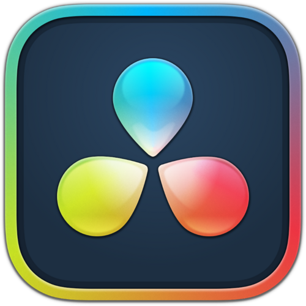
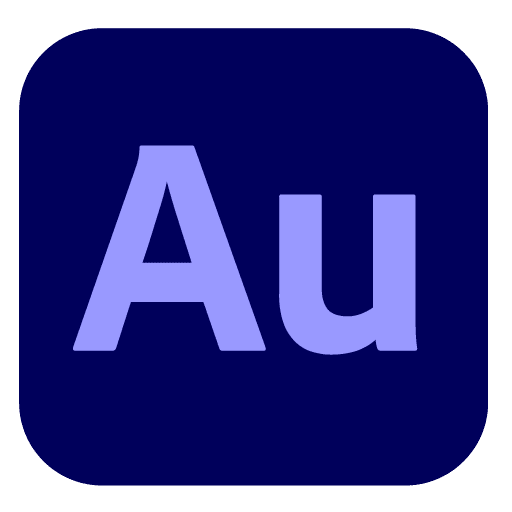
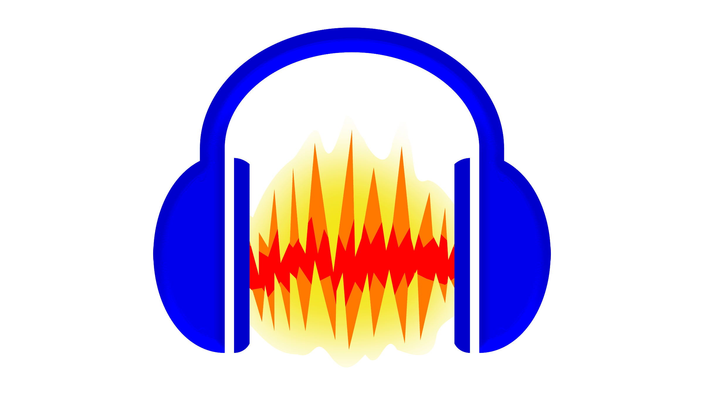
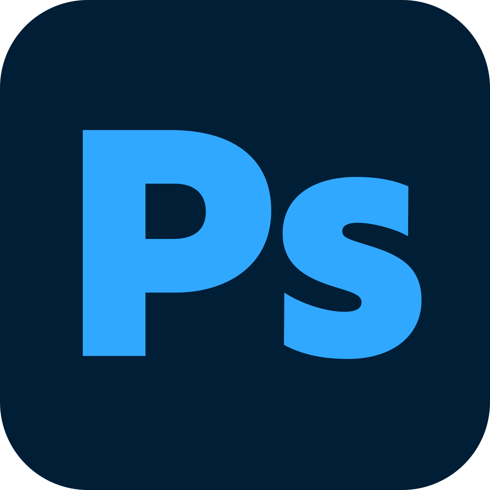
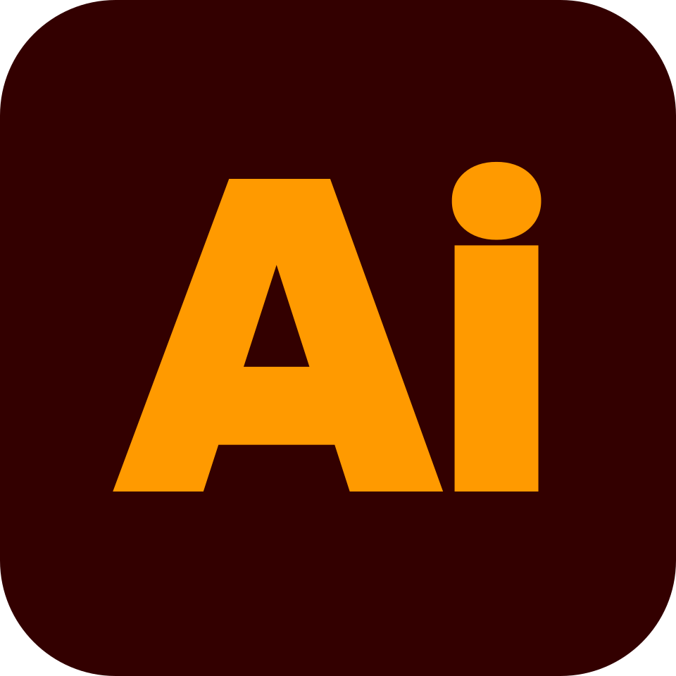
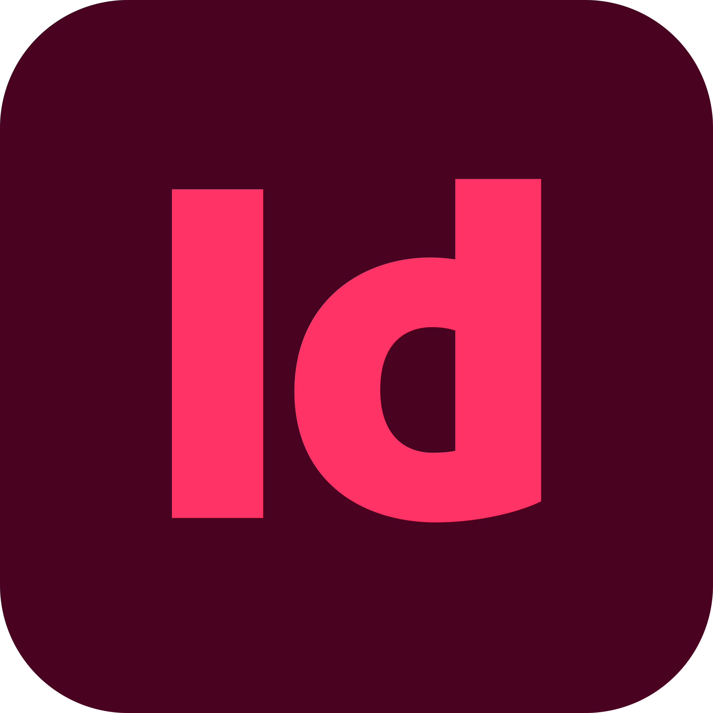
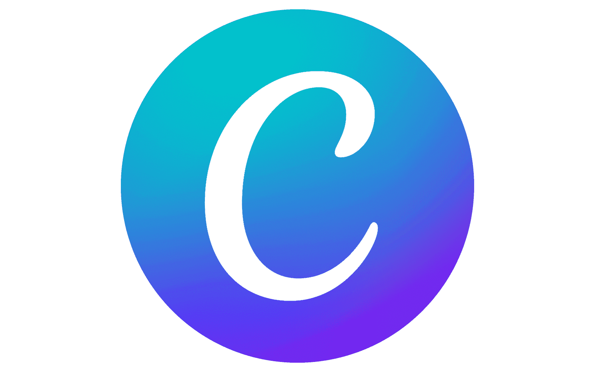

Créatives
- Création de contenus visuels
- Conception graphique et mise en page
- Montage et narration vidéo
- Recherche d'univers visuels
Étudiant en deuxième année de BUT MMI à Vichy, parcours Création Numérique.
Passionné par l'univers audiovisuel, je porte un intérêt particulier à la réalisation, à la production radiophonique et au traitement du son. Curieux de nature, j'aime aussi m'investir dans la communication numérique et la création de contenus pour les réseaux sociaux.
Actuellement en deuxième année de BUT MMI à l'IUT de Vichy, je m'épanouis totalement lorsqu'il s'agit de monter, d'optimiser et de donner vie à des contenus à partir d'une base existante. Mon objectif ? Intégrer une équipe pour participer à des projets concrets, de la captation à la diffusion, tout en continuant d'apprendre.

DaVinci Resolve Montage & Post-production
Audition
Audacity Prise de son & Mixage
Photoshop
Illustrator
InDesign
CanvaIUT Clermont Auvergne, site de Vichy (03). Parcours Création numérique.
Lycée Albert Londres, Cusset (03).
Entreprise Dumange (03). Une première immersion en entreprise, éloignée du numérique, mais qui m'a forgé une véritable rigueur et le sens de l'organisation au quotidien.
Découverte du travail de terrain. J'y ai appris l'importance de la collaboration et du respect des consignes, des bases essentielles pour le travail en équipe d'aujourd'hui.
Intéressé par mon profil ou par l'un de mes projets ? Je serais ravi d'échanger avec vous pour discuter d'une opportunité ou simplement faire connaissance. Retrouvez également mon CV et mon parcours professionnel ci-dessous.